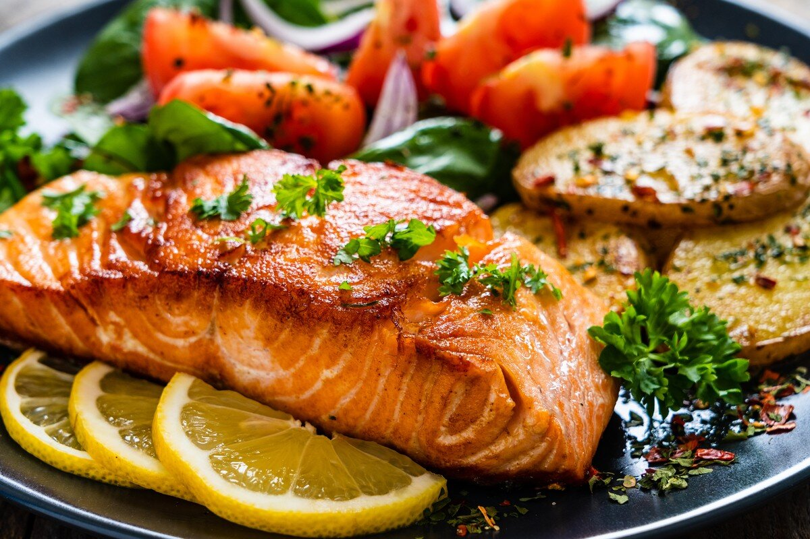

Salmon

Description
This is a delicious meal for anyone who loves fish and salmon in particular. It is also relatively easy to cook. You can cook the rice or potatoes the way you like them. I prefer to eat my salmon with Spätzle, a type of noodles specific to southwestern Germany.
You can serve the salmon with vegetables. My favorite vegetable to serve with salmon is broccoli. The green color of broccoli and the rosa color of the salmon create a colorful dish. Combined with the yellow color of Spätzle or noodles, this dish is not only tasty but also full of colors.
Ingredients
- 500g salmon
- 500g broccoli
- 1 eggplant
- 250g Spätzle or noodles
- 1 onion
- grape seed oil
Steps
- Cook Spätzle or noodles for 10 minutes in boiling water
- Cut the onion, broccoli and eggplant in small pieces
- Cook the onion and then the eggplant and then the broccoli in a pan
- Heat some grape seed oil in a pan and then fry the salmon in one piece
- Fry the salmon for five minutes on one side and three more minutes on the other side
- Serve the salmon, the vegetables and the noodles with a slice of lemon and a leaf of coriander